日志辅助工具timecat
字节跳动技术团队;) 2017-09-08
今天我要分享一个用于对日志文件进行二分查找的工具：timecat
0 用途
在线演示页面：http://aap.reetsee.com/page/timecat
不想看后面的直接看这一节就行。
timecat可以对线上的所有日志进行二分查找，常见需求是到了线上机器后想将某个时间段的日志直接读出来，不要用head、tail、grep或者awk了，不仅速度比不上timecat，光想着grep和awk的命令怎么构造的时候，用timecat结果都出来了（不是吹啊，真的）。
例如要得到9月6号19:13:14到9月6号19:19:10的日志中包含关键字『Super Saiyajin』的日志，这样写就行了：
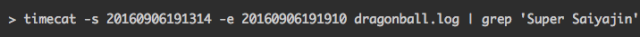
要直接把这个时间段的日志导出来就更简单了:
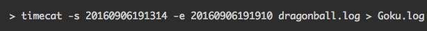
timecat在线上所有的机器都有，在自己电脑上通过 pip install timecat 就能安装。
对日志格式有要求吗：有序且里面包含时间信息就行，基本上就是没有要求，因为连时间的格式timecat都是自动识别的，只要输入的是常用的时间日期格式都能自动帮你转换成日志中的格式进行搜索，例如你也可以这样写：
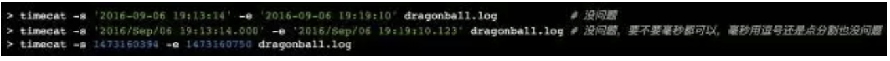
能够对流式日志生效吗：Zan nian da mie da，很遗憾不行呢，必须得是seekable的才行。
还有啥功能：没啥了，剩下的参数倒是还有几个，欢迎使用timecat -h查看。
差不多就这些了，顺便把tracegrep这个工具也说一下，对于一个Python日志，快速地获取日志中所有的exception调用栈可以这么写：
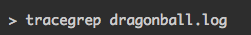
如果想排除某些exception，可以这么写:
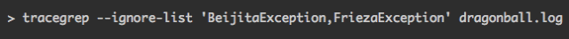
tracegrep是可以对流式日志生效的，所以发挥一下想象力也可以这样：
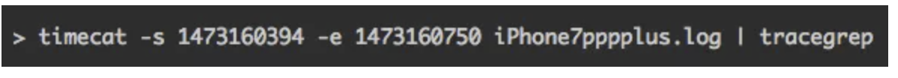
（然而这其实并不需要想象力····）
所以看完这里起始就已经没啥使用上的问题了。再往下的内容主要就是把上面的东西用啰嗦的方式重写了一遍，还有对awk、grep做了下PK，也就是Benchmark，跑分。用来打发时间还是不错的，比较忙的到此为止就行。
1 背景
（感动啊，真的有人看到这儿了，我得换一个认真点的姿势来写下面的内容了，咳咳…）
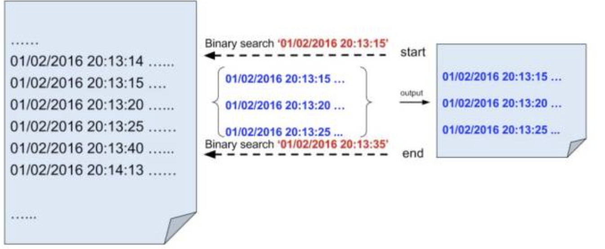
今天我要分享一个用于对日志文件进行二分查找的工具：timecat 安装方式很简单，只要你安装了Python 2，那么可以直接在命令行执行如下pip命令：
或者直接下载源码中的timecat，执行即可
不过在开始执行前，先进行提问：
以前头条的线上环境中，大部分日志切分是按照一天一次的方式进行。也就是说，在每台机器上2016年1月2号的日志全部打到一个文件，2016年1月3号的日志全部打到一个文件，目前我看到最大的一个单一日志文件，大小就是28G。
继续上面的例子，现在我们要在线上的所有机器上，搜 20点13分14秒 到 20点14分13秒 之间的这个日志中的某个关键字，并且把包含这个关键字的日志都输出。如果偷点懒，你可以直接使用grep命令去搜这个文件，但这样给定的时间范围这个条件就没用上了，因为grep会从0点开始搜。这样实际在做无用功，时间久不说，还会浪费大量的磁盘I/O。
并且，我们最终是要搜索线上的（部分或所有）机器，应该尽可能减少执行操作时对机器的影响。
所以，我们有几个基本的思路：
- 碰到非搜索时间段内的日志时，直接跳过；
- 尽量减少对日志文件内容的逻辑判断，过多的判断会造成时间和CPU的浪费。
2 思路
还是以上面的例子继续思考。
其实可以这样，我们用awk命令去获取每一行的日期时间：
- 当发现日期时间小于1月1号20点13分14秒，就直接跳过不处理；
- 当发现日期时间在这个区间 [ 1月1号20点13分14秒, 1月1号20点14分13秒 )，那么就用正则或者用grep去匹配一下有没有对应关键字，有就直接输出；
- 当发现日期时间大于等于1月1号20点14分13秒，就直接退出程序。
看起来没啥问题，能省的好像都省了不少。不过还是不够，因为所有时间小于20点13分14秒的行，实际是没有必要读取的，同时在目标时间段内所有日志行，都进行了读取时间日期的操作。
如果日志文件本身是有序的，这些实际是可以省的，我只需要知道起始时间和结束时间在文件中的位置即可，然后读取这两个位置之间的内容并匹配关键字就行。
要直接对有序的内容进行元素定位，最好的方式之一就是使用二分查找。
3 难点与细节
思路都有，就是细节比较多，以下列出几个。
与传统的二分搜索不一样，日志文件中的每一条日志长度都是不一样的，我们使用 mid = start + (end - start) / 2 得到mid时，并不直接指向一行的行首。所以我们需要找到mid所在行的行首。
要解决死循环的问题，哪怕mid的值前后不一样，但是mid指向的行可能是一样的。
日志文件中可能包含非法的日志行，例如Python业务中，有些地方使用 logging.exception(“…”) 打印出来的调用栈就是多行的，而且每一行还没有日期时间。
有的日志文件可能是按升序排的，有的日志文件可能是按降序排的，这两种排序使用的比较运算是不一样的。
不同的日志文件可能有多种不同的日期时间格式，需要对这些日期时间进行格式判断。而且有的日期时间格式之间不能直接比较，例如 Jan 01 18:00:00 与 Apr 01 19:00:00 ，谁比较大呢？直接按照字典序来说肯定是 Jan 01 18:00:00 这个日期大，而实际不是如此，类似的例子还有 12/30/2014 19:00:00 与 11/25/2015 20:00:00 。
当mid所对应的日志行为非法行时，我们需要顺序向下查找合法的行，如果向下查找失败，那么实际要从mid开始倒序查找，需要解决从文件的一个位置开始倒序读取内容的问题。
4 使用timecat
timecat的命名借鉴了Linux的cat命令，使用也非常简单，只要你有Python 2.x的版本就可以
4.1 获取timecat
有三种方式获取timecat，分别是用pip，用git，或者直接下载源码。如果你使用的是git下载的方式，还能够直接运行demo文件夹下的demo.sh来查看执行效果。下面给出操作步骤。
通过pip获取
如果你安装了pip那很赞（通常现在的Python都直接包含了pip），无论是在Mac还是在Linux上，都直接执行 pip install timecat 就可以了。
通过git获取
如果你没有安装pip，但是有git，那么就使用这条命令直接下载timecat的git仓库：
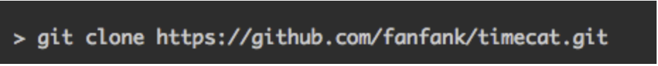
这个时候你可以直接运行一下demo程序查看效果，执行如下命令就可以：
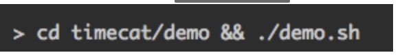
应该能够看到如下输出：
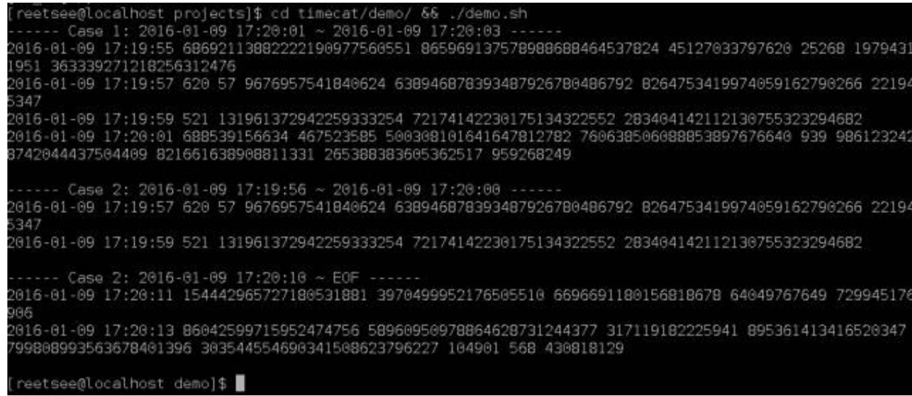
直接下载源码文件
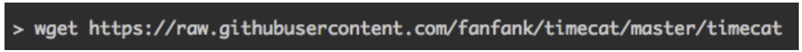
然后给timecat加上执行权限:
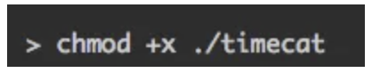
大功告成，接下来就可以使用了。
4.2 小试牛刀
假设你的日志文件如下所示：
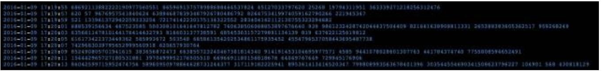
上面的日志是我用随机数生成的，把这个日志保存为demo.log。
这份文件中，日志的开始时间是从 2016-01-09 17:19:55 到 2016-01-09 17:20:13 ，我们通过以下三个任务来熟悉timecat。
任务1：获取2016-01-09 17:20:01 ~ 2016-01-09 17:20:03的日志
如果你是通过pip获取timecat，那么执行以下命令：
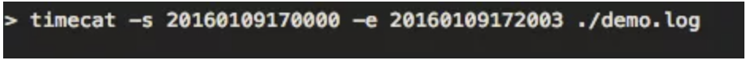
如果是通过git或者直接下载源码的方式获取，执行以下命令（下面不再赘述）:
执行完毕后，应该看到如下结果：
最终输出了从 17:19:55 到 17:20:01 的日志，为什么没有输出 17:20:03 的那行日志呢？因为timecat的时间区间是左闭右开的，所以最终不包括 17:20:03 的日志。 从这个例子，我们知道了运行timecat只需要指定3个参数：
- 第一个参数是-s参数，它表示希望timecat获取日志的起始时间；
- 第二个参数是-e参数，它表示希望timecat获取日志的终止时间（不包括这个时间本身）；
- 第三个参数是文件的路径，这里可以指定多个文件路径。
所以使用起来是非常简单的，要注意的是，-s与-e参数中指定的日期时间格式，因该与日志中出现的日期时间格式一致。
timecat会自动判断日期时间格式，无论你要搜的是syslog，nginx，apache，php，还是python等日志文件，都能自动判别出时间的格式而无需你手动再敲一次。
任务2：获取2016-01-09 17:19:56 ~ 2016-01-09 17:20:00的日志
直接执行命令：
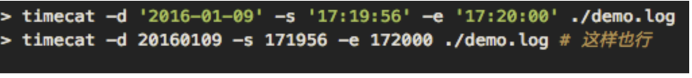
这时可以看到以下输出:
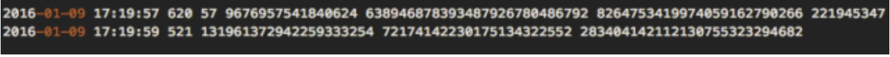
这次我们使用的命令参数有点不一样，用了一个新的-d参数，这个参数实际是给大家偷懒用的，如果你的-s和-e里，年月日的部分是一样的，那么可以把它们抽出来统一用-d参数表示。
任务3：获取2016-01-09 17:20:10 ~ EOF的日志
EOF就是一直到文件的末尾
执行以下命令：
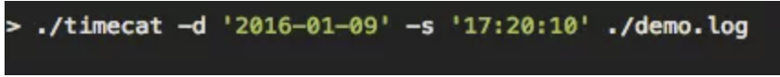
得到的输出结果如下:
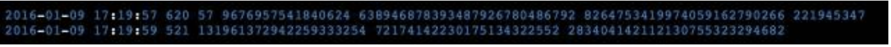
这次我们把-e参数省了，所以timecat就直接从起始时间开始一直读到EOF。
完成上面三个任务后，你就基本掌握了timecat的所有用法，是不是很容易？
最后再说说另外两个参数：
- 一个是-v参数，用来打印额外信息的，这些信息包括：二分查找的循环次数，整个二分查找过程中一共扫描了多少行内容，最终二分查找出来的日志起始位置和结束位置到底是哪里等；
- 令一个是–color参数，用来在程序输出错误信息、提示信息时把文字颜色变成红色、或者绿色，如果你运行timecat后输出的内容是在命令行，那么可以加上这个参数，如果不是，那么不建议加这个参数。
5 性能测试
是骡子是马，也得拉出来遛遛，到底timecat是不是就比awk、grep要快，下面就进行一下测试。
5.1 测试环境与测试步骤说明
这次测试使用的日志文件来源于头条线上机器的真实日志的一部分，大小为5.9G，我将这个文件命名为6g.log。
环境：
宿主机：MacBook Pro (Retina, 13-inch, Early 2015) 2.7 GHz Intel Core i5 8 GB 1867 MHz DDR3 Intel Iris Graphics 6100 1536 MB
虚拟机软件：VirtualBox Version 5.0.10 r104061
虚拟机系统：CentOS 7（Linux version 3.10.0-229.el7.x86_64 (builder@kbuilder.dev.centos.org) (gcc version 4.8.2 20140120 (Red Hat 4.8.2-16) (GCC) ) #1 SMP Fri Mar 6 11:36:42 UTC 2015），1024MB内存，1个CPU
测试流程：
- 执行sync，清空读写cache，让timecat查找6g.log中2015年12月25日9点钟的所有日志，并输出到『test_timecat.out』，得到资源消耗、执行时间等数据；
- 执行sync，清空读写cache，让grep查找6g.log中2015年12月25日9点钟的所有日志，并输出到『test_grep.out』，得到资源消耗、执行时间等数据；
- 执行sync，清空读写cache，让awk查找6g.log中2015年12月25日9点钟的所有日志，并输出到『test_awk.out』，得到资源消耗、执行时间等数据。
5.2 timecat测试
执行命令：
测试结果：
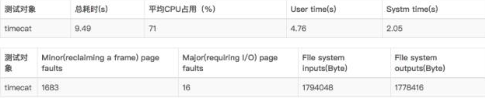
由于使用了-v参数，所以输出的字节数比实际打印的日志内容多一点。
5.3 grep测试
执行命令：
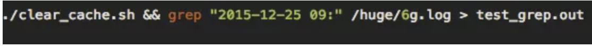
测试结果：
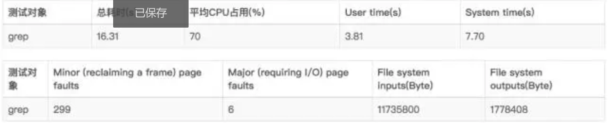
5.4 awk测试
在这次测试中，我们使用的awk脚本如下：
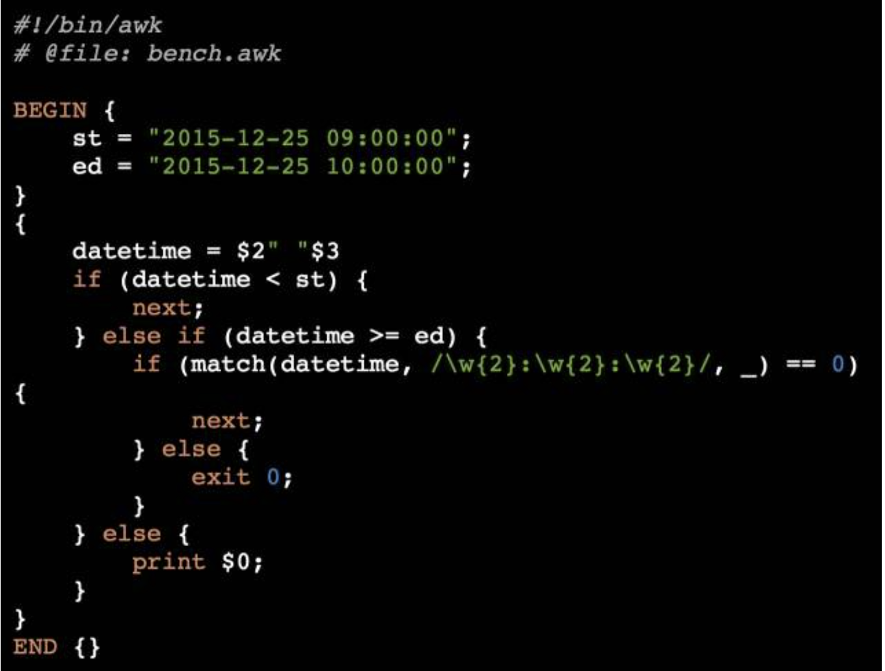
执行命令：./clear*cache.sh && awk -f “/huge/bench.awk” “/huge/6g.log” > test*awk.out 测试结果：
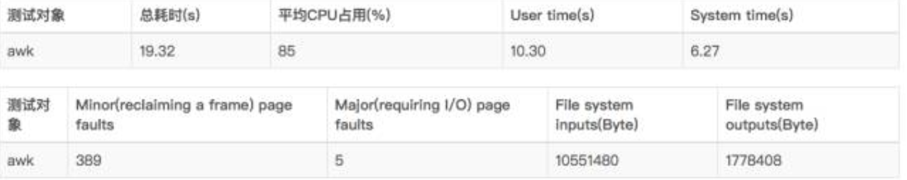
5.5 总体结果对比
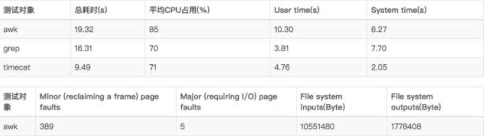
从测试结果来看，timecat无疑是有着巨大优势的，由于使用了“跳读”的方式，因此缺页次数会比较多。但是从执行时间、CPU占用、系统输入输出（I/O）来看，timecat几乎完胜。
但是不是任何时候都适合用timecat？我觉得不是，当文件足够小（3G左右且你的内存比较大时），或者你确定要搜索的内容在日志文件的比较起始或者比较靠后的位置（这样你可以使用tac）时，使用grep或者awk说不定是个更好的选择。